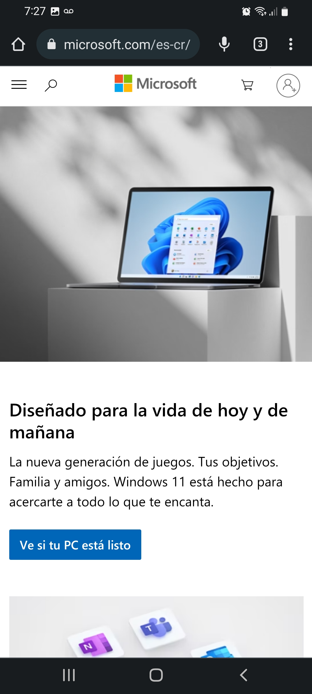

Proximity
Microsoft
microsoft.com
In this website the principle of proximity is evident in the text between the two pictures. Even when the screen has no content separator lines, by the proximity the text boxes have to each other, we can assume they are related between them, and no directly related to the pictures above or below.
Whithe space and Clean design
Dell
microsoft.com
Whithe space and clean design is applied here by having just one picture and a solid background button. Besides that, the text is not heavy and the icons below are just outlined, which makes the page feel light and easy to read.
Repetition
Banco de Costa Rica
bancobcr.com
In this website we can see the repetition principle through the consistency of just one or two fonts and the same background colors in the highlighted areas, which gives the user a consistent view whenever they see page related to Banco de Costa Rica